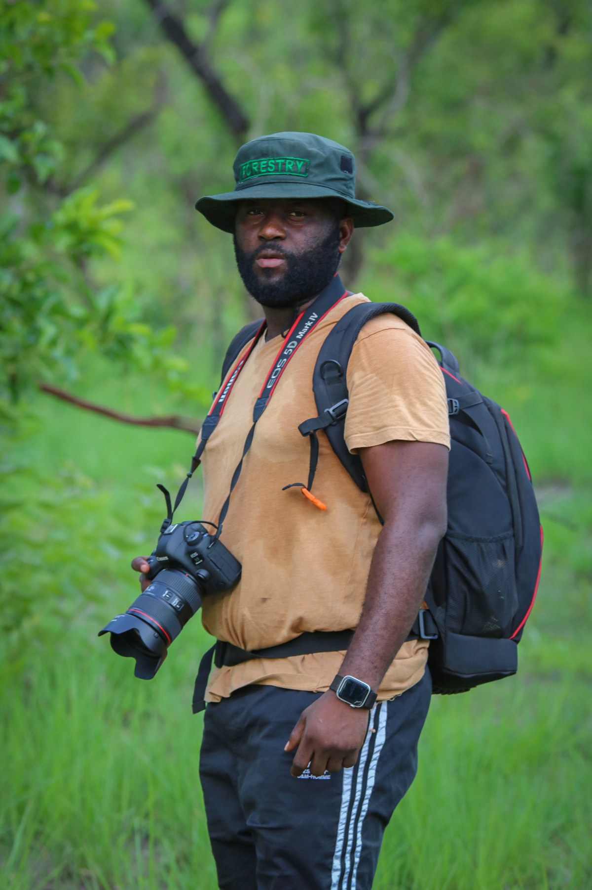
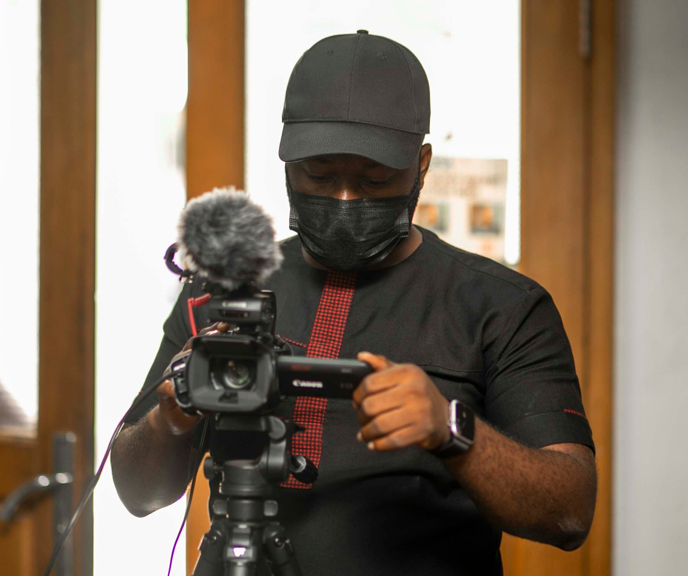
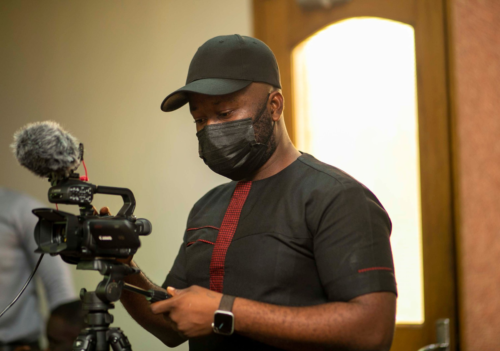
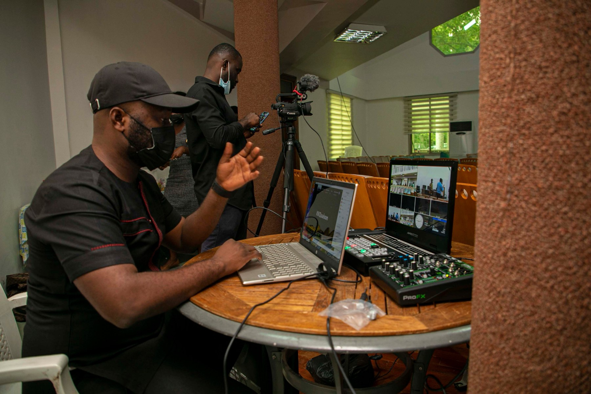
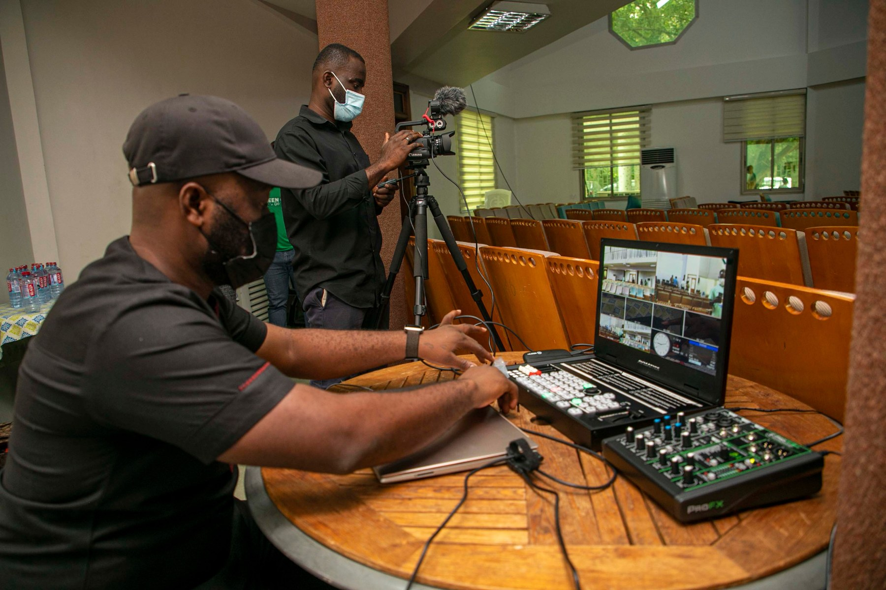

GHANA / FILM & FIELD WORK
From the field.
To the screen.
My video work spans wildlife locations, tourism events and social promotion. These films sit alongside the hands-on production work behind them.

Out in the field
View full size ↗A different way to tell the story.
My creative work took me beyond the design desk. Through video, I brought together places, people and activity, from the landscapes around Nkawkaw and Keta Lagoon to a tourism exhibition and wildlife promotion.
Each piece has a different setting and purpose. Together, they form part of my work in conservation and tourism communication.
LOCATION FILMS
Places worth looking closer at.
Nkawkaw discovery
A location film bringing together landscape, water and aerial views.
2:22 · Play with soundKeta Lagoon Complex Ramsar Site
A location film connecting the lagoon landscape with the people visiting and working there.
1:56 · Play with soundEVENTS & SOCIAL PROMOTION
Different audiences. Different formats.
Inter Tourism Expo 2021
Event coverage combining the venue, presentations and exhibition activity.
1:04 · Play with soundWildlife Division social promotion
An animated social promotion using wildlife imagery and Facebook-style posts.
0:35 · Play with soundBEHIND THE SCENES
Behind the camera and at the production desk.
My work also involved the practical side of production: working with camera equipment and at the production desk. These moments belong alongside the finished pieces.

Preparing the camera
View full size ↗
Working behind the camera
View full size ↗
At the production desk
View full size ↗